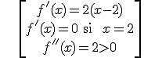

Ejemplo 1: f(x) = x4 + 8x3 + 22x2 + 24x + 9
•1. Domf = R
•2. f es continua y derivable en R porque es polinómica.
•3. Simetría: f no es par ni impar.
•4. f no es periódica.
•5. Puntos de corte: (-3,0),(-1,0),(0,9)
•6. No hay asíntotas al ser polinómica.
•7. f’(x) = 4x3 + 24x2 + 44x + 24 f’(x) = 0 ↔ x Є {-3, -2, -1}
Ejemplo 2:
Ejemplo 3:

\[f(x)=\left\{ \begin{align} & {{\left( x+2 \right)}^{2}}\text{ si }x<-1 \\ & 2\text{ si }-1\le x\le 1 \\ & {{\left( x-2 \right)}^{2}}\text{ si }x>1 \\ \end{align} \right.\]
b) Encuentra los extremos relativos en el intervalo (1,4)
c) Calcula los intervalos de crecimiento y decrecimiento en el intervalo (1,4)
a) f es discontinua x = -1, tiene una discontinuidad inevitable con salto 1

\[\begin{align} & f'(x)=2(x-2) \\ & f'(x)=0\quad \text{si }x=2 \\ & f''(x)=2>0 \\ \end{align}\]